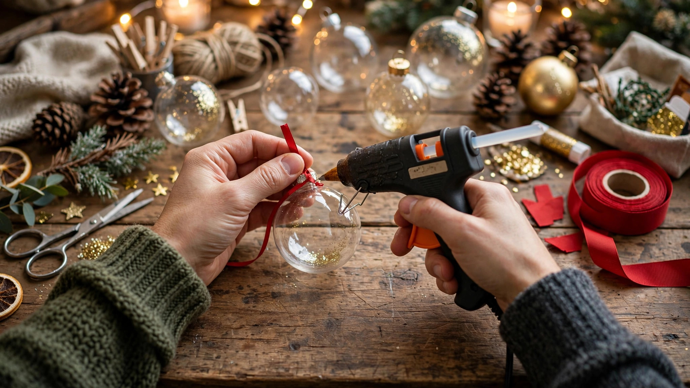

DIY Christmas Decorations: 20 Easy Ideas for 2026

Store-bought decor is lovely, but handmade Christmas decorations carry something no shop can sell: your time and love. These 20 easy DIY Christmas decoration ideas for 2026 use affordable materials — many from around your house — and suit beginners and kids alike. Set aside a crafty afternoon, put on carols, and make this the year your home wears your own creativity.
Handmade Ornaments
Clear baubles filled with faux snow, cinnamon sticks or dried flowers look boutique-bought. Salt-dough ornaments cut with cookie cutters, painted and ribboned, are a classic kid craft. Dried orange slices threaded on twine make fragrant garlands that look stunning against tree lights.
- Materials: clear baubles, salt dough, dried oranges, twine
- Time: 30 to 60 minutes per project
DIY Wreaths and Garlands
A grapevine wreath base plus faux pine sprigs, pinecones and a big bow becomes a front-door showpiece in under an hour. Paper snowflake garlands, popcorn-and-cranberry strings and felt ball garlands add handmade charm to mantels and staircases.
Table and Mantel Decor
Mason jars filled with fairy lights and cranberries make instant centerpieces. Wrap empty boxes in kraft paper for decorative gifts under the tree. A simple evergreen runner down the dining table with scattered pinecones and candles looks effortlessly elegant.
Kid-Friendly Christmas Crafts
Pinecone elves, paper plate Santas, handprint reindeer cards and pasta snowflakes keep little hands busy and create keepsakes you will treasure. Let kids sign and date their creations — future you will be grateful.
Shop: DIY Craft Supplies
Baubles, ribbons, fairy lights and craft basics for your handmade decor.

Prices shown at the time of publishing and can change.
Frequently Asked Questions
What are the easiest DIY Christmas decorations?
Paper snowflakes, mason jar luminaries, dried orange garlands and clear-bauble ornaments are the easiest beginner projects.
How do I decorate for Christmas on a budget?
Use natural materials like pinecones and branches, repurpose jars and boxes, and focus on a few high-impact areas like the mantel and front door.
What crafts can kids do for Christmas?
Salt-dough ornaments, handprint art, paper chains and pinecone animals are safe, simple and fun for children.
How far in advance can I make DIY decorations?
Most crafts keep for years if stored well. Dried orange slices and salt dough last indefinitely; fresh greenery should be made within two weeks of Christmas.
Conclusion
The most beautiful Christmas home is not the most expensive one — it is the one filled with things made by hand and heart. Pick two or three of these ideas, gather your favorite people, and craft your way into the merriest season yet.